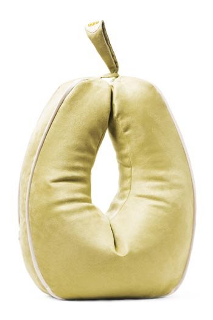
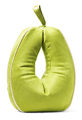

Vanillu Beige
Peran
Sérhannað húsgagn fyrir herðar og hendur
Upplýsingar
Púðinn sem umvefur þig og veitir stuðning.
Smelltu á púðann til að fletta í gegnum alla 5
mögulegu litina!
Um Peruna
Stór og notalegur stuðningspúði undir framhandleggi og hendur sem bætir setstöðu og gerir fólki kleyft að slaka á í herðum, handleggjum og baki. Peran hefur mjúkt borð fyrir handleggina sem nýtist við ýmiskonar iðju eins og bóklestur og tölvuvinnu. Púðinn kemur foreldrum ungbarna einnig að góðum notum.
Sjúkra- og iðjuþjálfar hafa frá upphafi mælt með Bara-púðunum. Margir upplifa öryggi, vellíðan og betra setjafnvægi þegar framhandleggirnir hvíla á púðunum og rannsóknir sýna að notkun þeirra dregur úr vöðvaspennu og auðveldar fólki ýmsa iðju.
Berðu góðan ávöxt! – Þrátt fyrir stærð Perunnar er auðvelt að taka hann með sér hvert sem farið er.
Notkunarmöguleikar
Peran er einskonar stærri útgáfa af Eplinu og nýtist á mjög svipaðan hátt en stærðin býður líka upp á aðra möguleika. Þannig er hægt að hvíla þyngri og stærri hluti á púðanum, t.d. stóra bók og hefur púðinn því stundum verið kallaður bókapúðinn.
Við tölum gjarnan um púðana okkar sem mublur, á sama hátt og við eigum skemil
undir fæturnar í hægindastólnum þá er stuðningspúðinn skemill undir
hendurnar.
Það er okkur mikilvægt að þegar púðinn er ekki í notkun sé hann yndi fyrir augað
þegar honum er stillt upp hvort sem það er standandi á gólfinu eða þar sem honum
er komið vel fyrir upp í sófa, rúmi eða upp á stól.
Að njóta og láta sér líða vel er samt alltaf mikilvægast og er það von okkar að Peran geti komið vel að liði til þess.
Ítarlegri upplýsingar
Þvottaleiðbeiningar
Peran er gerð úr vönduðu áklæðisefni með teflonvörn. Það
má þvo ytrabyrði púðans á 30°C á mildu þvottaprogrammi og þvottaefnið
þarf að vera án bleikiefna. Einnig er hægt að setja púðaverið í
hreinsun.
Ekki má setja púðaverið í þurrkara.


Þú hefur val um 5 liti
Smelltu á lit til að sjá stærri mynd af
púðanum


{kind=link}
{kind=link}
{kind=link}
{kind=link}
{kind=link}
{kind=link}
Kynntu þér það sem viðskiptavinir og sérfræðingar hafa að segja um Peruna
Smelltu á textan fyrir neðan til að fletta í
gegnum reynslusögurnar.